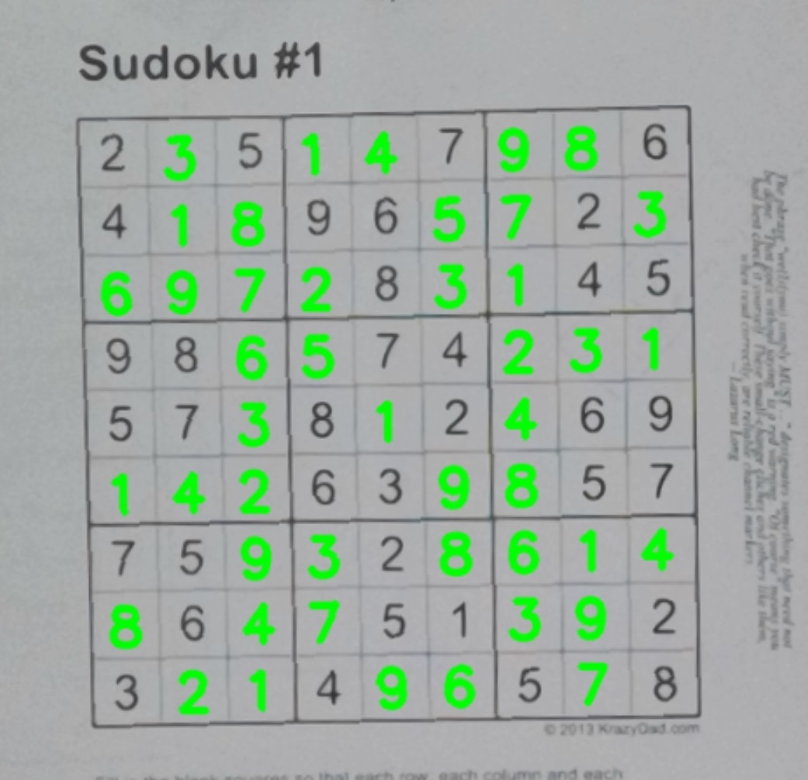

Algorithm X
Dancing Links
&Combinatorial Optimization
Mahmood Amintoosi
m.amintoosi @ um.ac.ir
Fall 2033 (Autumn 1402 SH)
These Slides are accessible from my github
Press ESC for overall view
Combinatorial Optimization
Combinatorial optimization is a subfield of mathematical optimization that consists of finding an optimal object from a finite set of objects, where the set of feasible solutions is discrete or can be reduced to a discrete set.Source: Wiki For Some Publications, See our Computer Science Github Site
Dancing Links
Knuth, Donald E. (2000). "Dancing links". Millennial Perspectives in Computer Science. 26 pages.Knuth, Donald E. (2019), The Art of Compuer Programming, Volume 4, Dancing Links, 276 pages
Boolean Satisfiability
Boolean Satisfiability (SAT) is the problem of deciding if there is an assignment to the variables of a Boolean formula such that the formula is satisfied?Consider the formula (A ∨ B) ∧ (~A ∨ ~C)
The assignment B = True and C = False satisfies the formula!
Truth Table (Wiki)
- Truth table for 3 variables
- Binary tree representation of search space
- Clustering
- Exact cover problem
- Linked lists
Node Insertion in Doubly Linked List
The core of DLX algorithm of Prof. Knuth
Having a sparse matrix made up of doubly linked lists makes it easy to remove nodes, by just doing this:
node->left->right = node->right;
node->right->left = node->left;
node->left = nullptr;
node->right = nullptr;
An observation about doubly linked lists is that you can remove a node from a list but leave the
node’s pointers in tact. You do the first 2 lines above but not the bottom 2 lines. If you do
that,
you can put this node back into the list by just doing this:
node->left->right = node;
node->right->left = node;
Applications
Why?Well, the author of the textbook you are reading has absolutely no objections to useful work and human progress. But he believes strongly that a book such as this should stress methods of problem solving, together with mathematical ideas and models that help to solve many different problems, rather than focusing on the reasons why those methods and models might be useful. We shall learn many beautiful and powerful ways to attack combinatorial problems, and the elegance of those methods will be our main motivation for studying them.
Donald E. Knuth, The Art of Computer Programming, Volume 4A, Combinatorial Algorithms, Part 1, Page 24/901
Applications
- Sudoku
- Tiling Problem
- N-Queen Problem
- Langford Pairs

The Art of Computer Programming, Volume 4, Dancing Links
Analyzing Algorithm X
Sudoku and N-Queens Problems
How to transform these problems to an Exact Cover problem?Codes:
- Exact Cover Sudoku Solver, C,C++, Python
- Algorithm X in 30 lines! (Python)
-
Efficient C++ implementation of
Algorithm DLX
How to compile & run in VSCode:- Get the latest version of MinGW-w64 via MSYS2 for C++ compiler and tools
- Install Visual Studio Code
- Follow the instructions in VSCode site for using C++ Compiler
- Add the MSYS installation folder to system path (for example: C:\msys64\usr\bin\)
- Download or clone dlx-cpp repository
- Go to the local folder of dlx-cpp
- add the following options to makefile in dlx-cpp folder: "-static -static-libgcc -static-libstdc++"
- Follow the instructions in Readme of dlx-cpp
Real Time Solver
An application that connects to Computer Webcam and solve Sudoku in Real Time (Python, OpenCV and Keras)Github Page

Deep Learning Course
Misc
| Guido van Rossum | Professor (Sergio Marquina) |